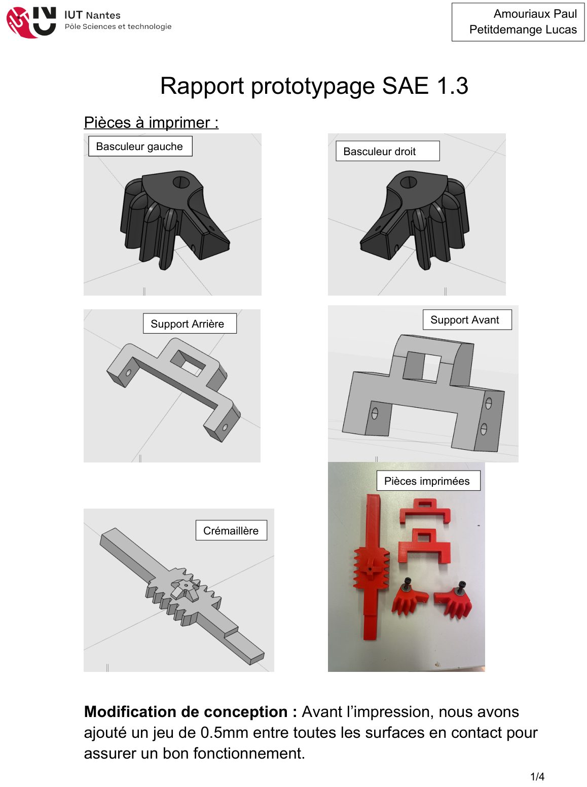
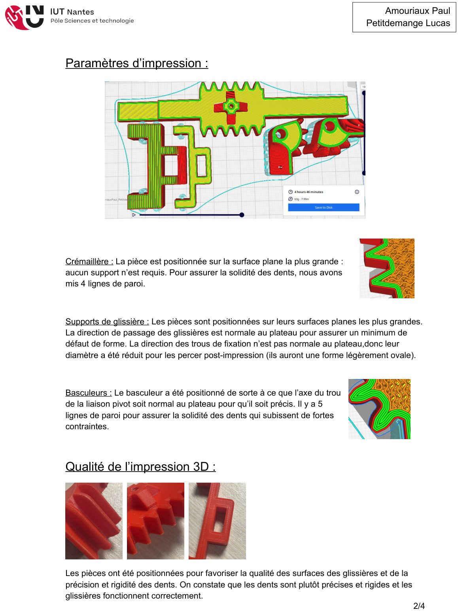
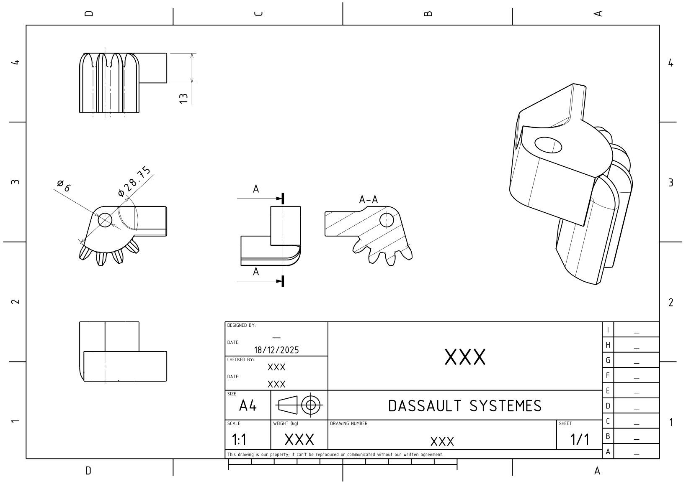

Contexte et objectif
Ce projet consistait à concevoir puis prototyper le système de suspension avant d'une Formule 1 radiocommandée. Le mécanisme retenu repose sur une paire de basculeurs dentés reliés par une crémaillère centrale : lorsque les roues montent, les basculeurs pivotent et compriment l'amortisseur central. L'ensemble des pièces (basculeurs droit et gauche, crémaillère, supports de glissière avant et arrière) a été modélisé sous Catia puis fabriqué par impression 3D.
Démarche
- Conception CAO des cinq pièces du mécanisme et mise en plan normalisée du basculeur.
- Adaptation au procédé : ajout d'un jeu fonctionnel de 0,5 mm entre toutes les surfaces en contact avant impression.
- Choix d'orientation d'impression raisonnés : axe de la liaison pivot normal au plateau pour la précision, glissières orientées pour minimiser les défauts de forme, 4 à 5 lignes de paroi pour la solidité des dents.
- Perçage post-impression des trous non normaux au plateau (diamètre réduit à l'impression).
- Montage et essais sur le châssis réel avec mesure de la course d'amortisseur.




Résultats
Le montage s'est déroulé sans blocage ni jeu indésirable, et le système a résisté à plusieurs essais sans casse. La mesure de la course d'amortisseur donne 7,1 mm pour un objectif de 8 mm ±10 % : la cible n'est pas tout à fait atteinte, mais le résultat est concluant pour un prototype. Une légère flexion de l'axe de la liaison pivot a été identifiée comme cause principale de l'écart.
Ce que ce projet m'a apporté
- Concevoir en anticipant les contraintes du procédé de fabrication (jeux, orientations, renforts).
- Passer de la CAO à la pièce fonctionnelle, puis valider par l'essai et la mesure.
- Analyser les écarts entre performance visée et mesurée, et proposer des améliorations.